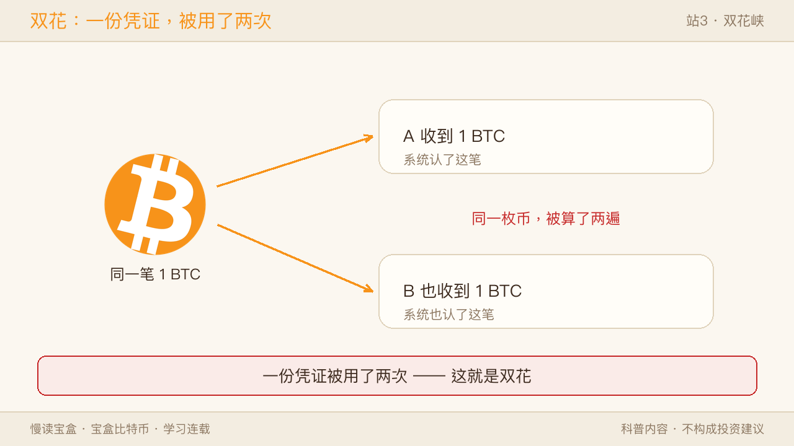
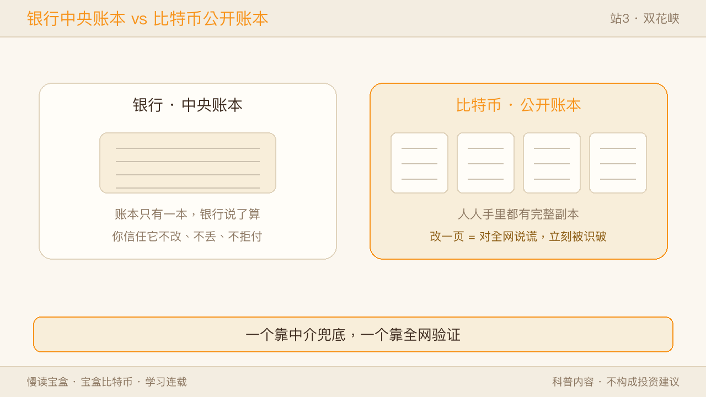
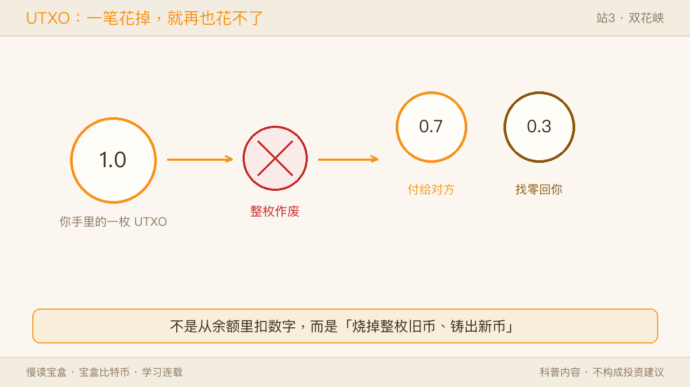
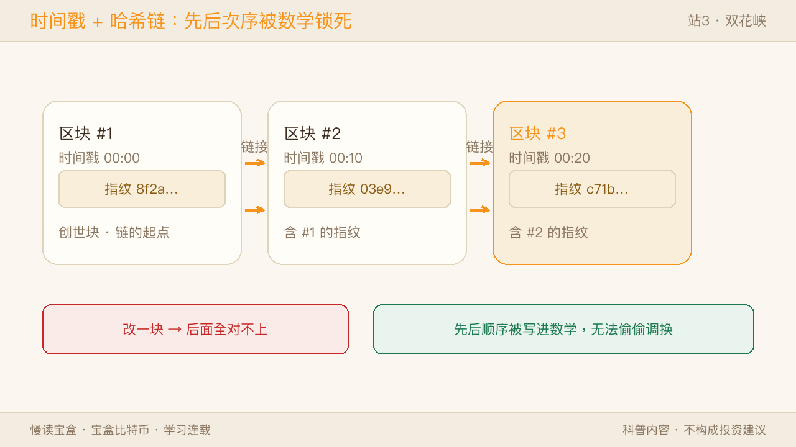
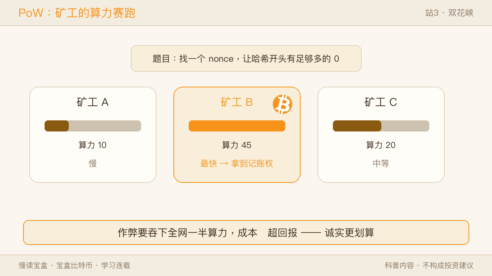
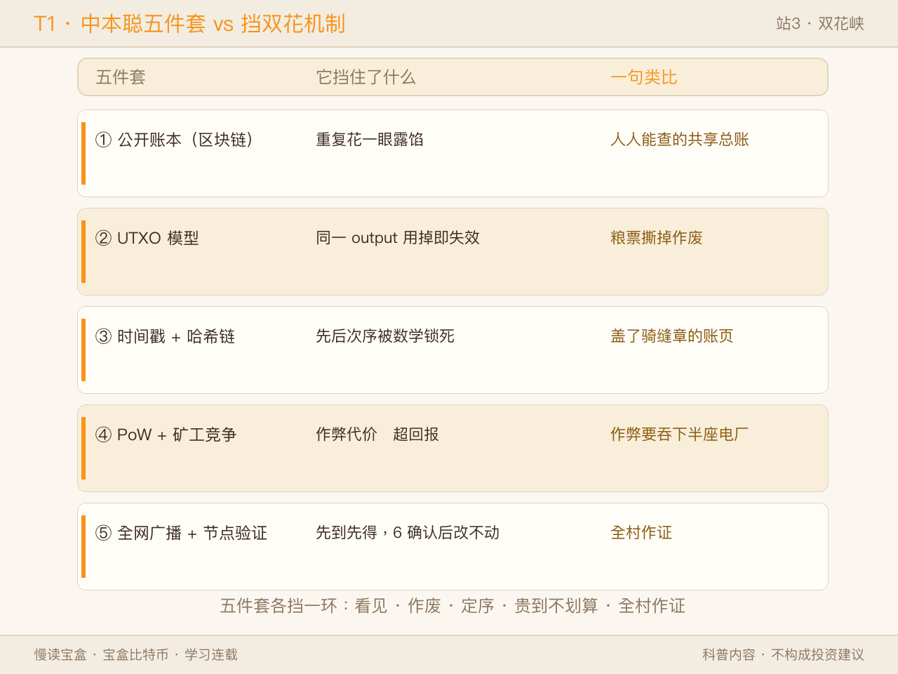
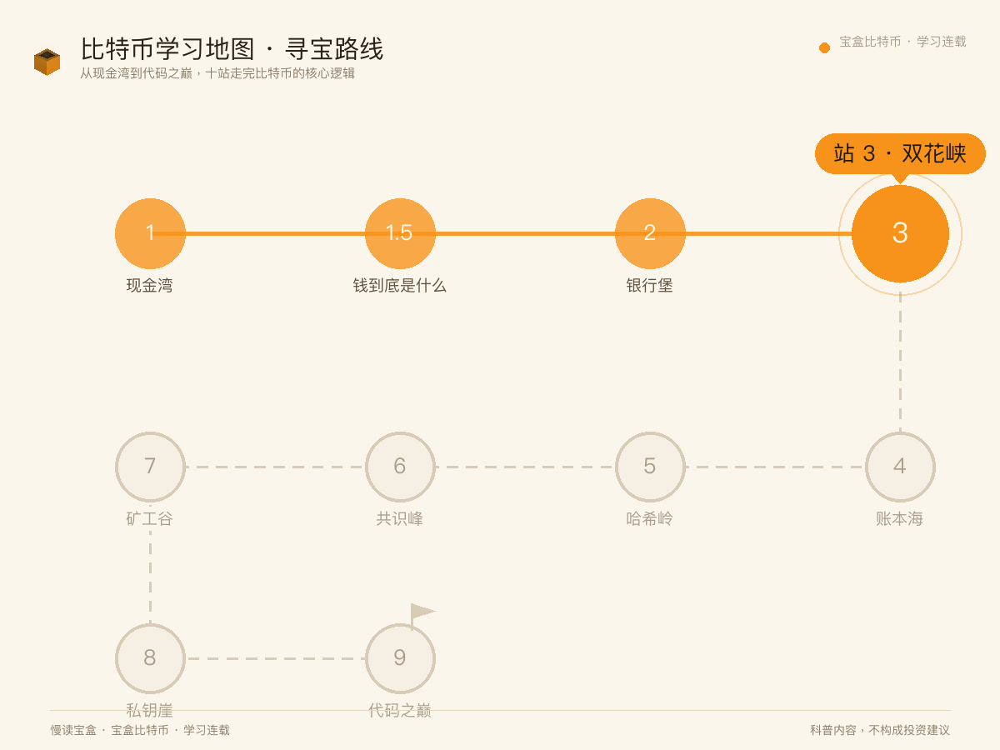
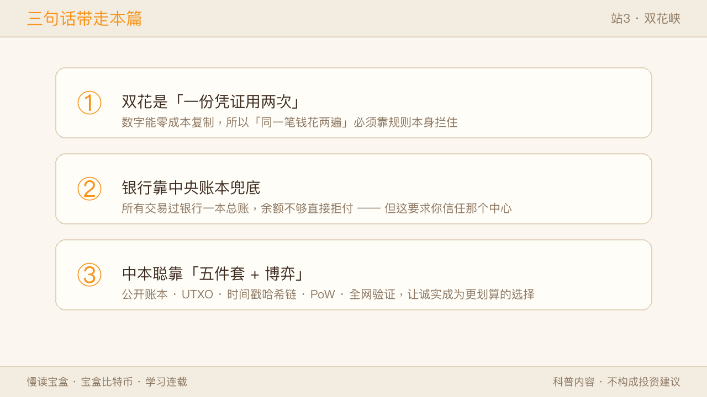

站2 我们看清：银行堡的裂缝，根源是「规则由人定、可被改」。而银行之所以能拦住双花，恰恰靠的是这个中心——它替你记总账。那如果连这个中心都不要，谁都不信，同一笔钱被你同时发给两个人，谁来喊停？这一站「双花峡」，过的就是这关。
一、双花到底是什么
在数字世界里，「钱」说到底是一串数据。而数据最难管的地方在于：它能零成本复制。
假设你有 1 个比特币，你把它「发」给朋友 A。可在电脑里，这个「发」更像「复制粘贴」——你手里的那份没消失，又发给 B 一份。如果系统认了这两笔，你就用同一个币付了两次账。这叫双重支付（双花）。

为了把这件事说清楚，我准备了四个比喻，你挑一个最合心意的：
A · 群里文件转发（本篇默认）
你在群里发了个文件给 A，顺手又转发给 B。群里的规矩是「每人只该收一份」。可文件能无限转发，群里怎么认定「只算一次收到」？——双花就是这个「数字重复转发」难题。
B · 电影票刷两次闸机
你把电影票拍了张照，先让自己刷进去了；出门绕一圈，又把同一张照片给朋友刷。闸机不认识「照片」，只认「这张票」。一张票刷了两次闸机——双花就是「一张凭证被用了两次」。
C · 百元钞复印
你只有一张百元钞，却把它复印了两份，分别付给两个人。现实里复印钞违法且易被识破；但在纯数字世界，「复印」几乎零成本、还看不出痕迹。双花就是「数字钞票被复印着花」。
D · 演唱会门票截图
你截了张电子门票图，同时在闲鱼上挂给两个人。两个人都拿着「同一张票」的截图要求放行。验票员该放谁？——双花就是「同一份数字凭证，被主张了两次所有权」。
这四个比喻说的都是同一件事：「一份凭证，被用了两次」，只是场景不同。
T2 · 四大比喻对照表
| 比喻 | 场景 | 共通点 | 差异点 |
|---|---|---|---|
| A 群文件转发 | 数字转发 | 数字可零成本复制 | 最贴数字本质（本篇主用） |
| B 电影票刷两次闸机 | 物理凭证 | 一份凭证用两次 | 靠闸机识假兜底 |
| C 百元钞复印 | 物理伪钞 | 复制着花 | 现实易识破/违法 |
| D 演唱会门票截图 | 电子截图 | 同凭证主张两次所有权 | 验票员难辨 |
双视角：用户视角——「我被重复付了/被骗了，钱没了」；系统视角——「账本怎么认定谁的交易先到」。这俩问题没解，就叫双花没解决。
✅ 像的地方：双花和「借出去的钱忘了收回」「优惠券被刷两次」一样，都是「同一份权益被重复主张」。 ⚠️ 不一样的地方：现实里的重复靠物理限制（物理上的钞没法复制、票要验真）兜住；数字世界里没有物理限制，必须靠规则本身拦住——而这恰恰是没有银行时最难的事。
二、银行是怎么解决的
传统做法简单直接：所有交易都过银行这个中央账本。你付给 A，银行在自己的总账上把你的余额减 1、A 加 1；同一笔钱再想付给 B，银行一看「余额已没」，直接拒。

✅ 像的地方：就像班级收班费，钱都交到生活委员一个本子上，谁交没交、花没花，本子说了算。 ⚠️ 不一样的地方：这要求你信任生活委员（银行）不乱改、不丢本子。双花在银行体系里不是问题，是因为有这个中心在兜底——可比特币恰恰要去掉这个中心。
三、中本聪的五件套
去掉银行，怎么拦双花？中本聪的答案不是某一招，而是一套组合拳：

- 公开账本（区块链）：所有交易公开、按时间顺序记在一本人人可查的共享账本上。想耍赖？全网都看着。→ 挡住双花：账是公开的，重复花一眼就露馅。
- UTXO 模型：比特币不用「账户余额」，而用「未花费的输出」。你花的每一笔，都是消耗一个已有的 UTXO、生成新的；一旦花掉，旧的就「已用」失效。同一笔 UTXO 想发给两人，系统只认先到的那笔。→ 挡住双花：同一份「output」用掉即失效，没法二次花。
- 时间戳 + 哈希链：每个区块带时间戳，并包含上一个区块的哈希，串成一条改了就断的链。先后顺序被锁死，没法偷偷把后发生的说成先发生。

- 工作量证明（PoW）+ 矿工竞争：谁先算出符合难度的哈希，谁获得记账权。想作弊？你得比全网诚实节点加起来还强的算力（51% 攻击），成本高到不划算。→ 挡住双花：作弊的经济代价远超回报。

- 全网广播 + 节点验证：交易瞬间广播全网；节点验重，发现同一 UTXO 两笔，只认先确认的；约 6 次确认后几乎改不动。→ 挡住双花：全网共同见证，先到先得。
T1 · 中本聪五件套 vs 挡双花机制表
| 五件套 | 它挡住了什么 | 一句类比 |
|---|---|---|
| 公开账本（区块链） | 重复花一眼露馅 | 人人能查的共享总账 |
| UTXO 模型 | 同一 output 用掉即失效 | 粮票撕掉作废 |
| 时间戳 + 哈希链 | 先后次序被数学锁死 | 盖了骑缝章的账页 |
| PoW + 矿工竞争 | 作弊代价远超回报 | 作弊要吞下半座电厂 |
| 全网广播 + 节点验证 | 先到先得，6 确认后改不动 | 全村作证 |

✅ 像的地方：这像一群人同时记同一本账，谁想偷偷改自己那页，别人一翻就知道对不上。 ⚠️ 不一样的地方：群记账靠「人多势众」的默契；比特币靠数学和经济学——诚实是算力的多数，也是更划算的选择。
四、精妙处：用经济博弈代替中央指令
妙处在这儿：它没靠某个权威说「不许双花」，而是让「诚实」成为经济上更划算的选择。攻击网络要掌控过半算力，成本天文数字；老老实实记账（挖矿）反而能拿奖励。于是作恶不如建设——双花在利益算盘下自动失效。
✅ 像的地方：像小区装了监控加举报奖，想乱来的人发现「犯规比守规矩更贵」，自然就消停了。 ⚠️ 不一样的地方：监控靠物业，比特币靠代码把这套激励写死，谁也改不了规则本身。
五、回到地图
回到这条比特币学习路线——站 1 现金湾我们见过了比特币是什么；站 2 银行堡我们看清了它要取代什么；本站 双花峡，我们看它怎么做到：在没有银行的前提下，用数学和经济学把双花按住。这一关过了，去中心化转账才站得住。

三句话带走本篇：
